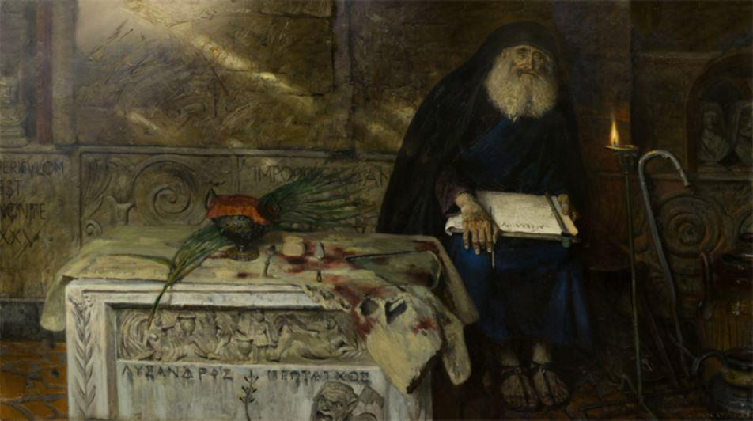

Comprendre la Russie : Les ciments spirituels russes
par Igor LEBEDEV
« Les ciments spirituels russes », Poutine, avec un air savant de connaisseur, nous a négligemment jeté cette expression il y a un an ou deux. Depuis, on n’a cessé d’entendre un chœur de critiques ironiques. Je ne sais pas jusqu’à quel point notre président est calé sur cette problématique, mais les ciments spirituels qui unissent le peuple russe existent bel et bien.
Il ne s’agit pas seulement de ce qui unit les Russes entre eux, ni des quelques propriétés supra systémique qui garantissent la spécificité de notre développement. C’est aussi ce qui nous différencie des autres.
1. La primauté de la Vérité sur la liberté est le principal ciment spirituel russe. Ceux qui préfèrent la liberté en tant que valeur suprême et principale doivent bien comprendre qu’avec le temps, il leur faudra inévitablement applaudir l’autorisation du mariage homosexuel. Ensuite, ils auront l’éducation sexuelle des enfants à partir de 6 ans. Ensuite, la légalisation des mariages avec les animaux. Et puis, par-dessus le marché, toutes sortes de baby box, euthanasie, et autres choses du même genre…
Si l’on pousse le principe de la primauté de la liberté jusqu’à son extrémité logique, nous verrons très vite qu’en réalité, ce qui est le plus important, pour nous autres Russes, n’est pas la liberté, mais la Vérité. Vivre d’après le droit, selon la justice, en accord avec sa conscience. Pour s’exprimer façon ancienne Russie, « pécher moins ». C’est un ciment, parce que nous sommes unanimes sur la question de l’interdiction des mariages homosexuels. La même certitude de leur malignité nous imprègne. Nous irons tous sur la place publique côte à côte, nous nous coucherons devant les chars, si on essaie de les légaliser. Parce que nous sommes russes, nous vivons non au nom de la liberté, mais au nom de la Conscience et de la Vérité.
Les mariages des gays seront légalisés non pour eux seuls mais pour toute notre société. Elle sera entièrement empoisonnée, défigurée moralement. La légalisation des mariages homosexuels c’est la trahison symbolique et essentielle de la Vérité.
Oui, les Russes prisent la liberté et la respectent. Mais ils comprennent en même temps que ce n’est pas le plus important. C’est là l’une de nos différences capitales avec les Européens. C’est précisément là que passe la ligne de démarcation entre les deux mondes. C’est justement pour cela que l’Occident ne nous reconnaîtra jamais, nous autres Russes, comme « siens ».
2. La primauté de la conscience sur l’intérêt personnel. N’ironisons pas. Oui, c’est vrai que nous autres Russes, nous sommes humainement aussi faibles que les autres peuples. Rares sont ceux d’entre nous qui sont capables d’une véritable abnégation. Tous ne parviennent pas à vivre en permanence selon leur conscience. Et nous le savons tous parfaitement. Alors voilà : les ciments spirituels, c’est quand nous avons conscience de cette primauté, que nous reconnaissons qu’il faut vivre selon sa conscience, respectons ceux qui y parviennent, savons nous accuser nous-mêmes de notre faiblesse et de notre rejet des principes.
3. La primauté de l’Homme sur la loi. L’Homme (la qualité humaine, l’humanité en général) est supérieur à la loi et plus important. C’est une particularité profonde de notre mentalité, qui doit son apparition au christianisme oriental. Seule l’Orthodoxie s’est correctement approprié les dires du Christ à ce sujet. L’Occident n’y est pas arrivé. Là-bas, la loi a progressivement pris le dessus sur l’Homme. Pour un Russe, la justice est plus importante que la loi1. Cela n’aurait pas de sens de présenter l’abîme des conséquences qui découlent de ce principe. Je dirai seulement qu’il y en a de mauvaises et de bonnes. A ces dernières se rapporte notre incroyable liberté intérieure, aux premières, notre fameuse corruption. Rares sont ceux qui comprennent que le pot-de-vin, dans notre culture, est l’expression de la relation humaine autant que du mépris de la loi. En donnant un pot-de-vin, nous tirons la langue à la loi, nous réalisons notre liberté intérieure. Nous donnons le pot-de-vin pour éviter les formalités ou la perte de temps. Simplement, nous prisons moins l’argent, et payons pour notre liberté. Le problème du pot-de-vin, dans notre culture, a été souvent débattu dans mon journal.
Il convient ici d’ajouter qu’en essayant d’inculquer une conscience juridique aux Russes, on leur inculque en réalité l’amour de l’Occident2.
4. La primauté de la sagesse (du bon sens) sur les droits formels. A mon humble avis, les Russes sont l’un des peuples les plus sages de la terre. Qui, parmi les peuples contemporains, a autant de remarquables philosophes ? Qui a une littérature plus philosophique ? Et nous estimons la sagesse beaucoup plus que les autres. Le Russe diffère de l’Ukrainien en cela qu’il aime le profond, le fondamental, et non l’avis « fluctuant ». Pour lui, ce dernier est un mensonge. Cela le différencie beaucoup des représentants des petites nations, surtout les Ukrainiens, qui « reconstruisent » toujours les évènements, ce qui crée l’impression d’une absence de principes et d’un certain opportunisme.
Pour nous, la sagesse est plus importante que le respect de la loi. Par exemple, pour apprécier la récupération de la Crimée par Poutine, nous ne considérons pas s’il a respecté les accords internationaux (pour autant que je sache, ils ont été violés) mais s’il a agi avec suffisamment de sagesse et de prévoyance. C’est un critère des plus importants, qui nous différencie non seulement des Ukrainiens, mais de tous les peuples d’Europe. Oui, en Occident, on sait beaucoup mieux organiser sa vie. D’une façon plus confortable, plus pratique, plus rationnelle, plus étudiée. Oui, là-bas, on respecte beaucoup mieux la loi. Oui, là-bas, l’aide humanitaire est plus développée. Mais cela n’a rien à voir avec la sagesse.
5. La primauté de la simplicité sur la complication. La particularité caractéristique des Russes, c’est la tendance à la clarté et à la simplicité. Tout ce qui est trop compliqué et abscons est perçu par nous avec une certaine suspicion. Si ce n’est ni clair ni simple, cela veut dire que cela n’est pas vrai. L’exemple typique en est la philosophie russe. Pour nous sage et simple sont des synonymes. En général, les Russes aiment la simplicité. Mais pas celle qui est « pire que le vol ».
La particularité qui distingue la plupart de nos réalisations techniques est dans l’originalité, l’imprévisibilité et la simplicité de la solution. On peut en produire quantité d’exemples.
6. La primauté de la vérité sur la force. Les Russes sont un peuple fort en esprit, ils respectent la force. Mais avec cela, ils considèrent que la vérité lui est supérieure, et sont prêts à s’incliner devant elle. C’est un proverbe purement russe : « si tu es fort, tu n’as pas besoin d’être intelligent ».
7. La primauté du général sur le personnel, le sens de la communauté. Nous comprenons et reconnaissons que les intérêts généraux sont plus importants que les particuliers.
8. La primauté du particulier (du personnel) sur l’officiel dans les relations avec le chef. Ou autrement dit : la foi dans le chef. Plus en détail ici http://kot-begemott.livejournal.com/2285048.html. Cela s’exprime, en premier, par le fait que chez les Russes, la cause est indissolublement liée à celui qui la dirige. Deuxièmement, il y a une exigence forte d’estime pour le chef, et surtout, pour le leader de l’Etat. Nous ne le regardons pas seulement comme un fonctionnaire, pour nous, le Président est le père de la nation. En réponse à notre respect et notre soumission, nous attendons de lui de l’amour et de l’attention. C’est un trait très féminin chez nous. Nous ne l’admettons pas toujours, mais c’est ainsi.
Oui, oui, c’est ce même paternalisme que ne peut supporter monsieur Medvedev. Si le Russe sait l’indignité de son chef, ne voit pas pourquoi l’estimer, les bras lui en tombent. Il commence à avoir la flemme, à boire, à voler… L’exemple inspirant du chef est pour nous exceptionnellement important. Même le mot « chef » témoigne de sa primauté (en russe il provient du mot « commencement », principe initial). En outre, notre respect de la loi est lié à l’exemple transmis par le chef. Plus en détail ici (http://kot-begemott.livejournal.com/1267894.html). Le chef doit être plus accompli que moi, son subordonné. Il doit être en quelque sorte mon maître spirituel. Il doit être un super maître dans l’affaire qu’il dirige. Cela ne s’exprime pas par des mots… De là vient notre « chefisme ». Ce n’est pas de la soumission orientale au bey, au « maître ». Pour le Russe, le chef, c’est une sorte d’objet de méditation collective. Il aide à se concentrer sur les problèmes généraux et collectifs de la nation, et à les préférer à nos problèmes particuliers.
Que nous le voulions ou non, notre ciment spirituel c’est d’une part l’exigence d’un juste pouvoir, d’autre part, ce pouvoir lui-même, fort et autoritaire. La réalité russe engendrera toujours la monarchie, quel que soit le camouflage qu’elle prendra, tsar, secrétaire général, président…
Lorsque sont au pouvoir ceux qu’il faut (ceux qui partagent les mêmes valeurs que le peuple) cette particularité permet de concentrer nos efforts de façon efficace et de résoudre des problèmes grandioses, tels que l’Europe n’a jamais pu en rêver. Le revers de la médaille est qu’éliminer une élite pourrie «au sang appauvri » dans un tel système est extrêmement difficile.
Il existe l’opinion selon laquelle une telle relation au pouvoir découle de la « nature servile » du Russe. Les partisans de ce point de vue adorent parler de notre « mentalité d’esclave » et de notre « servilité ». En réalité, ces exigences populaires à l’égard du chef de gouvernement sont tellement au-dessus du « manager recruté » occidental. Le problème, c’est que nos autorités n’ont jamais été capables de résister à la tentation d’utiliser notre particularité congénitale, la conscience de la place secondaire de la liberté (voir premier point) pour leur propre intérêt. Ils nous ont parasités avec cela presque mille ans. Et ils continueront à le faire. Et on n’y peut rien. Il semble qu’on puisse seulement s’en débarrasser en rejetant ce qui est pour nous le plus important. C’est-à-dire en jetant le bébé avec l’eau du bain. Un pouvoir voleur, limité et égoïste, c’est la croix qu’il nous faut porter. On a essayé de s’en défaire en 17. Ça a marché ?
Mais ce parasitisme n’a rien à voir avec l’esclavage. C’est le revers de la médaille, le maillon faible de notre liberté intérieure incroyable et qu’on ne voit nulle part ailleurs dans le monde. Qu’utilisent adroitement les parasites. Ceux qui vivent selon des principes tout différents. Parce que si se retrouvent au pouvoir des gens avec une morale élevée, alors ils finiront comme Nicolas II.
9. La primauté de la liberté intérieure sur l’extérieure. Oui, nous avons toujours eu des problèmes avec la liberté extérieure. Cependant, malgré tout cela, les Russes sont le peuple le plus libre, intérieurement. L’écrivain anglais S. Maugham, qui avait été en Russie en 1917, écrivait : « L’avantage des Russes sur nous, c’est qu’ils sont esclaves des circonstances à un bien moindre degré. Il ne viendra jamais à l’esprit d’un Russe de ne pas faire quelque chose qu’il veut faire, seulement parce que cela ne se fait pas. Il a supporté tranquillement l’humiliation pendant des siècles parce que, en dépit de l’oppression politique, il était personnellement libre. Le Russe possède une liberté personnelle beaucoup plus grande que l’Anglais. Il n’est pas lié par les circonstances… »
10. La primauté de la compréhension sur l’affirmation de soi. Ou autrement dit : la présence de l’humilité, liée aussi bien à notre sagesse intrinsèque qu’à notre liberté intérieure.
La nuit dernière, je suis passé devant une compagnie de jolies filles qui se tenaient près du métro « Beliaïevo ». Il était près d’une heure du matin, le métro allait bientôt fermer, je pensai alors : qu’est-ce qu’elles font, plantées là ? A ce moment-là, un Caucasien s’approche d’elles et, dans un russe approximatif, sans l’ombre d’un complexe, leur balance d’une voix forte : « Hé les filles, on fait connaissance ? » Les demoiselles repoussent leur nouveau soupirant avec ironie. Elles se livrent un certain temps à des escarmouches. Je descends l’escalier, mais j’entends chaque phrase, les jeunes filles répondent normalement, sans grossièreté.
Et voici que commence la vulgarité classique : le Caucasien se met d’un seul coup en fureur, s’enflamme et commence à agonir d’injures nos grâces, d’une voix sonore qui déraille presque dans les aigus. Elles descendent et s’engagent dans le passage souterrain, en direction opposée, le Caucasien les suit avec des hurlements. Il a suivi les jeunes filles quelques temps, puis il a jeté un regard autour de lui, s’est retourné, et s’est dirigé vers les portes vitrées de l’entrée du métro.
Dans la station, en attendant le train, je l’observais du coin de l’œil. Notre fier montagnard ne tenait pas en place, visiblement, son âme brûlait de haine du fait qu’il avait été repoussé. Et aussi, du désir païen de se venger qui en découlait. Il bondissait et s’asseyait, remuait les lèvres, jetait des coups d’œil haineux vers les portes d’entrée. Il était visible qu’il continuait à proférer des jurons.
Pure absence de liberté intérieure. Un Russe aurait aussi trouvé désagréable d’être repoussé, mais son âme aurait sans problèmes transformé ce conflit. L’âme peut être en général grande et petite, faible et forte. Devinez laquelle nous avons reçue et laquelle, les Caucasiens ?
11. La primauté des idéaux sur la réalité. Seuls les Russes considèrent la réalité comme quelque chose de secondaire par rapport à leurs idéaux. Pour nous, la réalité, c’est quelque chose d’à peine digne d’attention. Alors que les idéaux, alors là ! De là notre enthousiasme pour les anciens (le socialisme ou l’Empire Russe, ça dépend des gens), aussi bien que notre foi dans l’avenir de la Russie. Sans doute aurait-il fallu prévoir pour cela un point particulier, mais qu’il reste ici, en qualité de conséquence. Tous les Russes croient en l’avenir de la Russie. Tous jusqu’au dernier. Tourgueniev remarquait déjà : il suffit que quelques Russes se rassemblent, pour qu’ils parlent aussitôt de l’avenir de la Russie. Irina Ostaptchouk le formule autrement : « l’incapacité ou le refus de vivre sans idées. Nationale, communiste, libérale, anarchiste, démocratique, étatique, chrétienne etc. Le Russe a pratiquement toujours quelque opinion. A la différence des occidentaux pour qui cela est, en beaucoup de choses, secondaire et sans importance. Pour cette raison, la « société de consommation » à l’état pur est, en Russie, peu vraisemblable… »
12. Dans l’ensemble, nous sommes de terribles idéalistes. Si nous ne pouvons-nous installer sur cette terre avec succès, c’est que nous considérons ce problème comme insuffisamment idéal, indigne d’attention. De cette propriété découlent de nombreuses conséquences. Par exemple, c’est précisément à cause d’elle que la production de biens de consommation est chez nous peu élevée. Cela nous ennuie tout simplement de faire un bon téléviseur ou une automobile. Cela ne nous inspire pas vraiment. Un avion, un vaisseau spatial ou un sous-marin, c’est une autre affaire ! Là, nous nous retrouvons tout de suite au premier plan. C’est pour cette même raison, que nous avons toujours eu des familles faibles. Nous croyons davantage aussi dans l’Occident qu’en nous-mêmes, parce que nous l’idéalisons. Il nous paraît plus proche de l’idéal. Et puis bien d’autres choses, j’en ai souvent parlé.
Nous ne sommes pas prêts à classer cette particularité dans les défauts ou les qualités. C’est une propriété. Tout à fait comme la couleur grise des yeux. Il convient de l’étudier et de l’utiliser correctement. Et non de l’anéantir au profit d’un « développement plus efficace », pour que tout soit « comme en occident ».
13. La primauté du devoir sur le plaisir. Le plaisir et le devoir sont les catégories principales, les catégories clés de l’existence humaine. C’est là la question fondamentale de notre vie. Qu’est-ce qui est le plus important ? Que faut-il servir ? Il va de soi que les Russes n’aiment pas moins que les autres s’adonner aux plaisirs. Mais ils pensent que le devoir est quand même plus important. Au moins dans la profondeur de leur âme. Nous avons l’expression : éthique du service. « Pour l’affaire sérieuse, du temps, pour le loisir, une heure » est un proverbe très russe. A la différence d’autres peuples, les Russes reconnaissent la supériorité du devoir sur le plaisir. Mais vivre selon ce principe est très difficile. Le Russe est déchiré entre ces deux catégories, il hésite, il tombe et se relève, mais justement parce que sa vision du monde n’est pas unidimensionnelle, mais en volume, stéréoscopique. Car elle embrasse d’un seul coup deux catégories d’existence. A ce propos, cela fonde également aussi bien notre liberté intérieure que la sagesse russe spécifique.
La particularité de la civilisation russe est qu’elle hésite tout le temps entre les valeurs spirituelles et matérielles (le succès, le progrès, l’hédonisme, la primauté du plaisir sur le devoir incarnés par l’Occident). Nous nous différencions en cela de tous ceux qui ont déjà fait leur choix. J’affirme que cette hésitation est normale, c’est là notre voie.
Pourquoi tant de débats au sujet de la période soviétique ? Justement à cause de cela. Les fondateurs de l’état soviétique avaient donné comme but de placer le devoir sensiblement au-dessus du plaisir, d’opprimer généralement le second, et c’est pourquoi ils ont perdu3.
La primauté du travail sur le repos est une subdivision de ce point. C’est là que tout se gâte. Ce n’est pas seulement que l’idéal soit inatteignable, c’est que, je le crains, on ne le reconnaîtra pas tout de suite comme tel. En vertu d’une série de circonstances, l’éthique du travail a été détruite chez les Russes. Le travail a cédé le pas au repos, à la distraction, en dépit du fait qu’il avait auparavant sa valeur propre. Le Russe d’aujourd’hui travaille pour se reposer, et ne se repose pas pour travailler, comme autrefois. Et il ne s’agit pas de la période soviétique. Je donnerai l’exemple de la façon dont cette primauté « marche » à l’époque libérale. Visiblement, à cause du désir que tout soit « comme en Europe » : Poutine a ordonné d’examiner la possibilité du report du début de l’année scolaire4.
En réalité, le début des études fixé sur un seul jour a une énorme signification organisationnelle. Pour les écoliers, qui sont en majorité des paresseux et des traîne-grolles. Pendant l’été, ils se sont définitivement démobilisés. Il leur faut absolument le sursaut du 1° septembre. Et de plus, un sursaut général, qui donne une impulsion à toute la société.
Nous autres Russes, nous sommes par nature des êtes sociaux, pour nous il est important d’être comme tout le monde. Il m’arrive de me coucher tard, après 8 heures du matin. Je travaille sur mon dernier texte. Et je vois sous mes yeux les écoliers aller à l’école pour le 1° septembre. Et voilà : l’humeur générale se sent même à travers les rideaux de mon bureau. Le 2 ou le 3 septembre, ce n’est plus du tout pareil. Cet élan de l’âme particulier, incommunicable, lié au début de l’année scolaire.
De la même manière, la semaine de cinq jours structure les écoliers, avec l’emploi du temps, le journal, l’usage des uniformes… On va rejeter tout cela ? Au nom du libéralisme ? Les arguments en sont caractéristiques : « Igor Levitine, collaborateur du président, a proposé de reporter le début de l’année scolaire en Russie pour augmenter le flux des touristes de l’arrière-saison ». C’est-à-dire que le repos est mis au-dessus du travail. Un nouveau « ciment spirituel », en somme.
14. La primauté du synoptique sur le personnel. Je ne sais pas comment dénommer cela de meilleure façon. La capacité de s’approprier ce qui est étranger et de le rendre organique, partie de nous-mêmes. Cela découle avant tout de l’humilité russe. Nous ne nous considérons pas comme supérieurs aux autres, et à cause de cela, nous nous laissons instruire. Cependant, je donnerai la parole à un autre auteur :
« Si le Russe trouve une chose étrangère qui lui convient, une idée, une réalisation, alors il commence aussitôt à l’utiliser comme s’il l’avait inventée lui-même. Le Russe ne connaît pas les embarras, les prosternations ni la timidité, il se sent le maître, pour lequel le monde entier est un atelier, et qui peut s’équiper de tout instrument qui lui plaît et en faire quelque chose qui lui appartient. Ainsi du mot « générale », generalcha, dans lequel on entend une racine étrangère, mais dont le suffixe est luxueusement impudent dans son russisme sans complexes.
Le général lui a plu, il l’a pris, et lui a fait une amie, la « generalcha ». Ça, c’est russe ! A cause de cela tous les peuples possibles, en se heurtant aux Russes, n’en reviennent pas de la manière dont ils formatent la réalité à leur façon, en utilisant l’espace environnant comme un outil. « C’est vraiment une bonne ville que votre Kazan. Mais laissez-nous la brûler un peu et la mettre ici, voioilà. Comme ça, c’est plus joli. Vraiment. Et arrêtez de courir et de brailler, Tatars, c’est pour vous, imbéciles, que nous nous donnons du mal »5 …
15. Une langue russe unique. Comme dans la situation avec les étrangers, on absorbe des mots exotiques mais on ne les déforme pas, on leur donne juste une terminaison russe et on les décline comme on veut, de telle manière qu’on ne peut ensuite les différencier des locaux. Et les Russes sont ainsi : souples, ils s’adaptent facilement à d’autres peuples et habitudes mais en même temps, il les intègre dans une sorte de fonderie où chacun peut recevoir ce qu’il lui faut.
16. La primauté de la justice sur absolument tout le reste. En réalité, la justice est notre religion. C’est précisément devant elle que s’incline le peuple russe.
Notre relation à la justice est religieuse. J’ai écrit que l’Orthodoxie aussi, nous l’avons reçue parce que c’est une religion plus juste que les autres. Selon certains avis, la miséricorde est supérieure, pour les Russes. Ce n’est pas entièrement faux. Pour nous, la miséricorde est une manifestation de la justice. Elle est secondaire. C’est l’une des importantes particularités de la vision du monde des Russes. Ou bien, pour le dire autrement : pour nous, la justice englobe la miséricorde, on ne peut les opposer. Il est juste d’être miséricordieux. En général, chacun a sa conception de la justice. Les européens trouvaient juste de réduire d’autres peuples en esclavage. Le patriotisme étroit des peuples orientaux conduit à cela qu’en toute situation conflictuelle, ils trouvent justes seulement les leurs. La justice chez les juifs… possède également sa spécificité nationale. Et c’est seulement chez les Russes que la justice comporte non seulement la vérité objective mais la miséricorde, l’humanité. On peut le voir plus en détail ici http://kot-begemott.livejournal.com/2282829.html.
En outre, la foi en la justice est chez nous à double face : c’est soit l’assurance que la justice triomphera de toute façon, soit que de toute façon, on ne l’obtiendra jamais. D’une manière ou d’une autre, elle existe dans les deux cas.
17. Un « je -m’en-foutisme » à la limite du fatalisme ou, comme l’a exprimé plaisamment quelqu’un, « un peuple qui se fiche de tout est invincible » (rappelé par http://tslongin.livejournal.com/profile). Cela découle de notre foi dans le Destin et la justice.
18. Le Russe ne connaît pas de limites, il fait tout « jusqu’au bout ». Le travail, l’ivresse, l’amour. Cela découle entièrement du point précédent, mais doit être classé à part. C’est une particularité très importante des Russes. Cela ne vous dérange pas que je cite les vers de mon poète préféré ?
S’il faut aimer, que ce soit à la folie,
Menacer, que ce soit pour de bon
Invectiver, avec emportement,
S’il faut tailler, que ce soit à la racine,
Discuter, alors avec hardiesse,
S’il faut punir, alors qui le mérite,
Pardonner, alors de toute son âme,
Et s’il faut festoyer, que ce soit avec faste !
A. Tolstoï
19. Pour les Russes, la fidélité est une des vertus les plus importantes. En particulier, la fidélité au leader. Certains sont encore aujourd’hui tourmentés par le problème de la fidélité de nos aïeux au dernier Tsar. Nous discutons jusqu’à maintenant, comme des idiots, de la fidélité de nos anciens alliés, toutes sortes de Bulgares ou de Serbes (qui nous sont, soit dit en passant, redevables non seulement de leur liberté mais de leur vie). Bien qu’ils aient depuis longtemps oublié toute espèce de fidélité, l’ayant vendue, pas pour être secourus, non ! Pour les bonnes dispositions formelles de l’Occident.
Même en politique extérieure, la Russie s’est toujours orientée précisément selon sa fidélité, son devoir envers ses alliés, et non selon le pragmatisme (cette situation est maintenant en train de changer). Il est intéressant que c’est précisément la fidélité que Pouchkine met en relief (encore un ciment spirituel) dans son poème aux « calomniateurs de la Russie6 ».
Depuis longtemps ces tribus se haïssent ;
Plus d’une fois ont plié sous la menace
Tantôt leur côté tantôt le nôtre
Qui résistera dans ce conflit inégal :
Le Polonais arrogant ou le Russe fidèle ?
Les ruisseaux slaves se perdront-ils dans la mer russe ?
Sera-t-elle tarie ? C’est là la question.
20. L’aptitude au sacrifice désintéressé. C’est plus particulièrement une propriété des femmes russes, découverte par F.M. Dostoïevski7. Elle découle autant de notre idéalisme (le Russe se sacrifie à ses idéaux) que des autres points. Elle se manifeste beaucoup plus souvent qu’on le pense ordinairement, mais surtout dans les situations extrêmes.

21. La disposition permanente à aider. En outre, toute personne qui le demande ou se trouve dans le malheur. C’est mon ami Alexeï Fiodorov qui me l’a rappelé.
22. L’incapacité (qui n’est souvent sur du désintérêt) à se montrer sous un jour flatteur. On peut le formuler autrement : la primauté du contenu intérieur sur la forme extérieure. Cela se déduit de tous les points précédents à la fois. Les Russes sont simples, naturels et sincères. C’est d’ailleurs quelque chose que tous les étrangers ont remarqué. En fonction de cette particularité, les Russes ne sourient pas à tout le monde, comme les Américains, mais seulement à ceux qui leur en donnent l’envie (plus de détails sur le sourire russe ici http://kot-begemott.livejournal.com/1151666.html). Nous n’avons pas besoin de montrer que tout va bien. Nous ne supportons pas de nous vanter, de faire notre propre réclame. Cela nous paraît indigne et même répugnant. La cause ne parle-t-elle pas d’elle-même ? Pourquoi faut-il encore la célébrer, souligner la prééminence de son succès sur les autres ? L’autosatisfaction est étrangère aux ciments russes. Les Russes condamnent l’orgueil sans appel, et ne se permettent que l’orgueil collectif à quelque sujet.
Ici, nous nous détachons nettement de l’Occident, très habile à s’auto glorifier. L’Europe depuis des siècles démontre et impose adroitement l’idée au monde entier qu’elle est la meilleure et que tous les pays doivent suivre sa voie. Bien que ce soit une opinion assez discutable, surtout si l’on prend en considération les moyens employés. Nous, les Russes, à sa place, nous serions gênés. Mais c’est vrai que l’Europe n’a pas notre humilité…
Au fait, c’est justement en fonction de cela que nous avons toujours perdu les guerres de l’information. En face de ce même Occident.
23. Une vision de l’homme qui ne se restreint pas à un ensemble de relations économiques et sociales. Dans la perception russe, l’Homme, c’est quelque chose de plus haut. Pour s’exprimer en langage chrétien, c’est l’image et la ressemblance de Dieu. Je répète : tous, parmi nous, ne vivent pas seulement de ces principes élevés. Les héros sont toujours rares. Mais nous les connaissons, nous nous orientons par rapport à eux, ils sont répandus dans l’atmosphère. Ils sont une part de notre culture, sont réalisés par les autorités en politique intérieure et extérieure, chacun s’en nourrit avec le lait de sa mère…
24. Une relation russe spécifique aux allogènes. Découle directement du précédent point. Oui, au niveau conscient, nous regardons de haut ces tadjiks et ces caucasiens, des sauvages, que peut-on y faire ? Mais au fond de notre âme, nous les considérons comme nôtres. Les jeunes filles de l’exemple précédent ont répondu au caucasien tout à fait respectueusement. Un Russe aura honte de ne pas payer ce même travailleur immigré pour son travail. Aussi honte que de ne pas payer un Russe.
En mars, j’ai dû employer un tadjik pour creuser une fosse à la datcha. Par la même occasion, il m’a beaucoup aidé à faire d’autres travaux, au sujet desquels nous n’avions pas conclu d’accord formel (assemblage de tuyaux). A ma stupéfaction, il s’est révélé un gars doué d’un cerveau en parfait ordre de marche, débrouillard et inventif. Nullement plus bête qu’un Russe. Connaissez-vous l’expression « la débrouillardise du soldat » ? C’est tout lui. Et pour tout dire, je me suis surpris plus d’une fois à penser que lui et moi, nous formions une seule équipe homogène, qui accomplissait une affaire commune. De tels sentiments sont toujours réciproques. Et en travaillant avec lui, je pensais que je ne le ressentais pas du tout comme un tadjik, venu d’un pays à la religion et à la culture complètement différentes. Je l’avais assimilé.
L’étranger, lui, avec toute sa responsabilité incroyable envers ses compatriotes, privera facilement un Russe de son salaire, s’il se considère dans une position plus forte. Et cela ne lui posera aucun problème de conscience.
Le critère principal du Russe envers les allogènes est simple : tu respectes notre peuple, notre culture, nos traditions, notre langue, nos autorités, nos usages et nos lois, tu es prêt à les soutenir, alors tu es des nôtres.
Un commentateur a fait allusion au fait que le héros principal du merveilleux film « Les gens inadéquats » n’était pas un Russe de souche. A cela on lui répondit : et quelle différence, s’il parle sans le moindre accent et se conduit comme un Russe ?
En bref, nous considérons que ce même tadjik est à l’image de Dieu, comme nous-mêmes. Et nous reconnaissons son égalité. Cela n’existe nulle part dans le monde. C’est une relation typiquement russe. Les occidentaux, avec tout leur respect des lois et leurs slogans sur l’égalité et la fraternité regardent tous les allogènes avec condescendance, aussi bien à la surface que dans le fond de leur âme. Pour comparer, on peut découvrir comment les « navigateurs civilisés » de la fin du XIX° siècle chassaient le crocodile à Ceylan8, en utilisant comme appât un négrillon de location.
En 1853, un savant géologue renommé, sir Roderick Impey Murchinson, qui avait parcouru toute la Russie, s’élevant au cours d’une importante manifestation à Hyde Park contre la guerre de Crimée, dit :
« Même si la Russie élargit son domaine grâce aux colonies frontalières, à la différence des autres puissances colonialistes, elle donnera plus à ces nouveaux sujets qu’elle ne leur prendra. Non par philanthropie, ou quelque chose de ce genre. Les motivations initiales de tous les empires diffèrent peu, mais là où apparaissent les Russes, tout prend d’une façon miraculeuse, une autre direction.
Les normes morales élaborées par les slaves orientaux avant même l’époque chrétienne ne permettent pas au Russe de violer la conscience du voisin ni d’attenter à des biens qui ne lui appartiennent pas. A cause, le plus souvent, de l’indestructible sentiment de compassion enraciné en lui, il préfère donner sa dernière chemise que de la prendre à quelqu’un. C’est pourquoi quelle que soit la victoire de ses armes, la Russie, sur un plan exclusivement mercantile, sera toujours perdante.
Ceux qu’elle a vaincus ou pris sous sa protection y gagnent en fin de compte, conservant intacts leur genre de vie et leurs institutions spirituelles, ils accroissent leurs possessions matérielles, en dépit de leur insuffisance évidente en regard du progrès, ce dont on se persuade aisément en les voyant de près, et évoluent sensiblement sur la voie de la civilisation.
L’Estonie et le Caucase en sont des exemples éloquents, méprisés et opprimés au cours des siècles par leurs voisins, mais occupant une place honorable parmi les peuples et ayant atteint, sous la protection de la Russie, une aisance sans commune mesure avec leur état précédent, alors que la situation du peuple russe, c’est-à-dire de la population enracinée de la métropole, ne s’en est aucunement trouvée améliorée. Cela peut nous sembler paradoxal, mais c’est un fait, dont les causes premières se cachent, sans nul doute, dans les particularités de la morale russe ».
25. Une mentalité synthétique particulière, réunissant de façon organique aussi bien la rationalité occidentale que la spiritualité orientale. Leur situation au centre métaphysique entre l’Occident et l’Orient donne aux Russes une vue stéréoscopique et large de tous les problèmes. Nous avons un regard particulier, et le plus souvent plus lucide, raisonnable et profond. Le meilleur exemple en est la philosophie russe.
26. L’autodérision. Non, l’auto-flagellation. Le processus long et complexe du développement de notre culture a développé chez les Russes une relation à eux-mêmes originale, à double face. Avant tout, nous adorons nous injurier. Ceci ne va pas, chez nous, et cela non plus… et comparer avec ce que c’est dans les « pays civilisés » (comprendre, les bons pays), c’est là vraiment un devoir sacré. Cependant, dans les situations critiques, tout cela s’évapore, nous savons oublier nos défauts, nous souvenir de nos qualités et nous unir.
Il convient d’ajouter ici l’humour russe spécifique, tout en finesse, en intonation, riche de nuances. Un phénomène tout à fait unique, inscrit dans notre langue même, dans la nature même de l’homme russe, une sorte de mélange d’humour et de sagesse vitale, situé très souvent, en outre, au niveau de l’intonation. Parfois, les Russes sont les seuls à comprendre cette intonation, d’une manière épidermique, ce qui les réunit. Nous avons le sentiment aiguisé du comique du point de vue de la non correspondance de ce qui est avec ce qui devrait être (une des définitions de l’humour). Cela vient d’un sentiment spécifique de la justice et d’une aspiration intérieure à la perfection : toujours remarquer quelques déviations subtiles et en triompher dans un style ironique. De plus, l’auto dérision est aussi à l’œuvre, ce qui n’est pas propre, disons-le, aux autres peuples. La satire européenne, par sa force de conviction, est aussi loin de la russe que l’ironie de D. Swift de la satire mordante de Saltykov-Chtchédrine.
27. L’héritage soviétique. Vous pouvez considérer cela comme vous voudrez. Mais nous l’avons eu et cela nous unit. Nous avons eu cette étape très originale de notre histoire. Cela aussi nous rend différent des autres. Cela vit en nous jusqu’à présent.
28. L’orthodoxie. Chez nous, les avis divergent à son sujet. Remarquons cependant qu’une majorité écrasante de Russes éprouve le besoin de se tourner vers l’Eglise à des moments particuliers de la vie (la naissance d’un enfant, le mariage, la mort). Considérant notre particularité de « nous gratter seulement quand ça serre », on peut estimer qu’une majorité écrasante de Russes est croyante. Cela existe chez nous, et cela nous unit. Cela nous unira toujours, cela restera notre plus profond ciment spirituel. Je dirais même plus : c’est précisément l’Orthodoxie qui a contribué, au cours des siècles, à forger notre mentalité, qui a consolidé nos meilleurs côtés et affaibli les pires. Pour ce qui est des popes en « Mercédès », que l’on évoque souvent, cela n’est pas l’Orthodoxie, ce n’est pas précisément elle, ce n’est pas son essence, mais ses rebuts. Chaque affaire a ses rebuts, son revers négatif, et plus elle est importante, plus elle en a. Le plus important ne reste généralement pas à la surface, pour l’identifier il faut y consacrer pas mal de forces, et les rebuts, comme il se doit, sautent tout de suite aux yeux. C’est précisément cela qui produit la confusion.
29. La primauté de la sagesse sur l’égocentrisme dans le caractère des femmes russes. Nos femmes sont les plus belles du monde. C’est admis universellement. Seules les Créoles et les Ukrainiennes peuvent (à mon avis) leur faire concurrence, mais elles ont un caractère épouvantable. Le caractère d’une nation se révèle plus que tout dans celui de la femme. Et réciproquement. Comparez le caractère de la Russe et de l’Ukrainienne et vous comprendrez tout.
Le caractère de la femme russe, sa sagesse de la vie, s’avère un de nos plus importants ciments nationaux. Voici ce qu’écrit Walter Schubart dans sa monographie « l’Europe et l’âme de l’Orient » :
« Quand l’inclination asiatique pour la gent féminine rencontre instinctivement un respect chrétien conscient pour celle-ci, on peut s’attendre à des résultats étonnants. Le résultat de cette coïncidence, qui ne s’est répétée nulle part et jamais sur cette terre, c’est la femme russe. C’est l’un des rares heureux hasards sur notre planète. Beaucoup de ceux qui sont allés en Russie en reviennent avec l’impression que la femme russe a plus de valeur que l’homme russe… La femme russe réunit en elle de la façon la plus attirante tous les avantages de ses sœurs occidentales. Elle partage avec l’Anglaise le sens de la liberté féminine et de l’indépendance, sans se transformer pour autant en « bas bleu ». Elle a en commun avec la Française la vitalité spirituelle, sans la tentation de la dérision ; elle en a le goût raffiné, le sentiment du beau et l’élégance, sans devenir la victime de la vanité et de la passion des atours. Elle possède les vertus de la ménagère allemande, sans limiter sa vie aux casseroles ; elle possède, comme l’Italienne, un puissant sentiment maternel, sans le dévoyer en amour animal. A ces qualités s’ajoutent encore la grâce et la douceur propres aux slaves… Aucune autre femme, en comparaison de la Russe, ne peut être à la fois une amoureuse, une mère et la compagne de notre vie. Aucune autre ne concilie un besoin si sincère de s’instruire avec le souci des choses pratiques, et aucune n’est aussi ouverte à la beauté de l’art et à la vérité religieuse… Nous avons de sérieuses raisons d’espérer que c’est justement la femme russe qui sauvera le peuple russe ».
30. Le sentiment de sa mission historique. Rassembler autour de soi les peuples qui font appel à tout ce qui a été énoncé précédemment. Les aider à se familiariser avec la culture russe et, à travers elle, à déboucher sur l’approche de la culture mondiale. Créer une civilisation unique, une solide famille de peuples frères, est l’un des trois principaux piliers de l’Idée Russe.
Ces traits spécifiques du Russe, s’ils sont intelligemment utilisés, peuvent élever la nation russe à une hauteur considérable, engendrer un type original, puissant. Le Russe peut obtenir le succès dans le cas où il suit sa vraie nature, donnée par Dieu. Et il sera toujours perdant, s’il essaie, au lieu de se les approprier avec créativité et de les adapter à soi, de copier aveuglément les mœurs et valeurs des autres.
C’est à peu près tout, mais si vous avez des idées, ajoutez-les.
I.L.
Notes :
1. http://kot-begemott.livejournal.com/2273729.html et http://kot-begemott.livejournal.com/2285048.html
Partager cette page